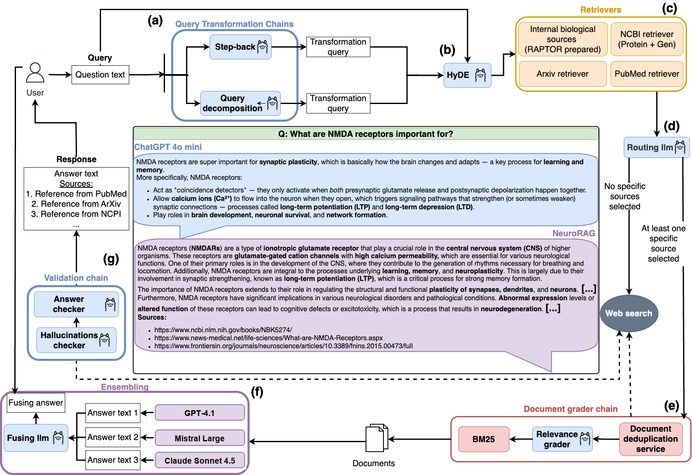
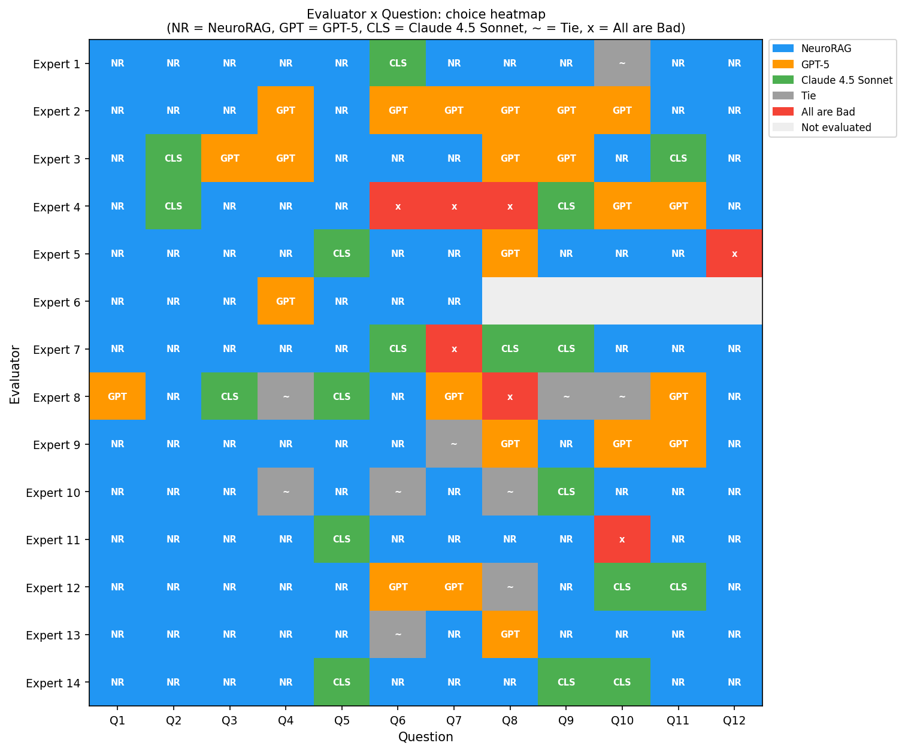
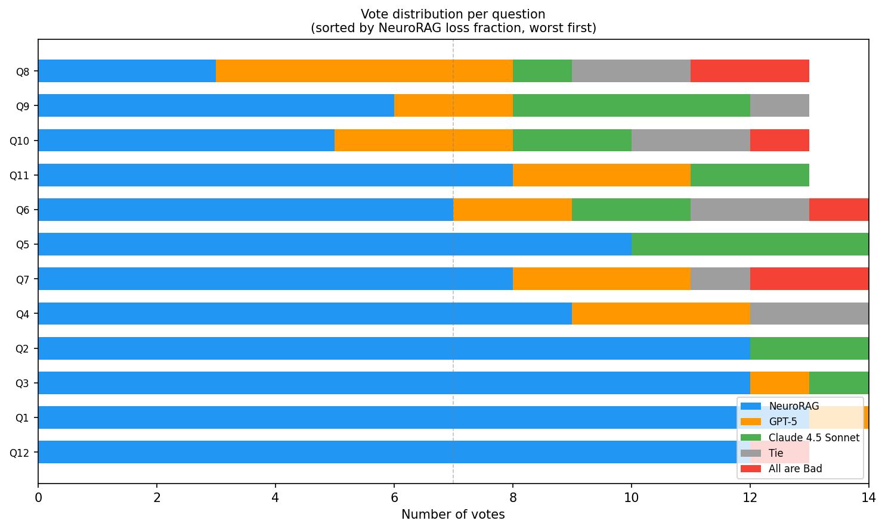
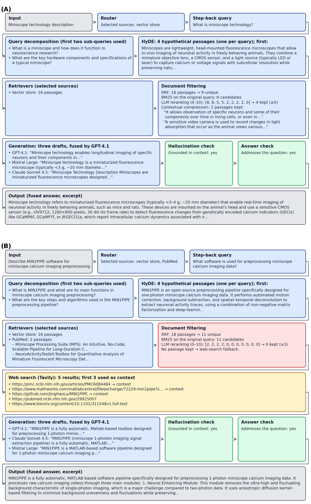

Evidence-grounded answers from a coordinated retrieval and reasoning system.
Big Data and Cognitive Computing · 2026
1 Laboratory of Biomedical Imaging and Data Analysis, Institute of Biomedical Systems and Biotechnology, Peter the Great St. Petersburg Polytechnic University
2 ITMO University
The architecture figure traces the full answer path: NeuroRAG routes a question to suitable scientific sources, retrieves and filters passages, combines candidate answers, and checks the final response for grounding and relevance. The diagram provides a map for the stages described below.

Figure 1. NeuroRAG’s multi-agent pipeline, from question routing and evidence retrieval through answer synthesis and validation.
In biomedicine, answers must be complete, current, and verifiable. NeuroRAG is a multi-agent retrieval-augmented system that answers neurobiology questions using scientific sources. Its knowledge base combines a hierarchical index of neurobiology textbooks with live search of PubMed, arXiv, bioRxiv/medRxiv, NCBI Gene and Protein, and web search as a fallback. A source router selects evidence; query agents reformulate questions; retrieved passages are fused, reranked, and compressed; multiple language models draft answers that are merged and checked for grounding and relevance.
NeuroRAG treats answering as a sequence of specialized steps so each response can be traced back to retrieved literature and checked against the question.
The paper evaluates benchmark accuracy, generated-answer similarity, comparisons with other retrieval pipelines, and a blind human preference study.
Figure 2 presents a blind preference study with 14 evaluators judging answers to 12 questions. Panel (a) records the choice made for each evaluator–question pair, while panel (b) aggregates those choices by question. Across 163 votes, NeuroRAG received the largest share overall and led on 11 of the 12 questions; GPT-5 led on Q8, and Q9 was more closely divided. The two panels make the aggregate result easier to interpret: preferences were strong on several questions but were not uniform. This study measures evaluator preference, rather than factual correctness.

(a) Evaluator choices by question
(b) Vote distributionThe blind evaluation compares preferences across 163 valid evaluator–question responses from 14 evaluators. The table reports both all responses, which include ties and “all inadequate” votes, and the 146 decisive responses where one system was selected. That distinction matters: NeuroRAG’s share is 64.4% when all responses are counted and 71.9% among decisive votes. Brackets show 95% Wilson confidence intervals; a dash means the category is not included in the decisive-only denominator.
| Outcome | Count | Share of all responses (N = 163) | Share of decisive responses (Ndec = 146) |
|---|---|---|---|
| NeuroRAG | 105 | 64.4% [56.8, 71.4] | 71.9% [64.1, 78.6] |
| GPT-5 | 23 | 14.1% [9.6, 20.3] | 15.8% [10.7, 22.5] |
| Claude 4.5 Sonnet | 18 | 11.0% [7.1, 16.8] | 12.3% [7.9, 18.6] |
| Tie | 10 | 6.1% | — |
| All inadequate | 7 | 4.3% | — |
Table 1. Expert blind evaluation results on 12 questionnaire items (14 evaluators; one vote per evaluator–question pair). Shares use all responses (N = 163) and decisive responses (Ndec = 146); brackets show 95% Wilson confidence intervals. Adapted from Table 5 of the paper.
This comparison uses the official MMLU test split across nine biomedical and psychology subsets. Each score is the fraction of questions answered correctly; n gives the number of questions in that subset. NeuroRAG records the top score in seven rows, with GPT-4.1 leading on High School Psychology and Professional Psychology. Bold marks the highest value in each row. These descriptive maxima do not by themselves establish statistical significance; the paper reports paired tests separately in Appendix F.
The results show both the breadth of NeuroRAG’s benchmark performance and the variation across disciplines. Larger subsets provide more questions for comparison, while smaller subsets can be more sensitive to a few individual answers. Read each accuracy alongside its sample size, and treat close scores as descriptive unless supported by the paper’s statistical analysis.
| Subset | n | GPT-4.1 | Mistral Large | Llama 3.3 70B | BioMistral-7B | NeuroRAG |
|---|---|---|---|---|---|---|
| Anatomy | 135 | 0.8741 | 0.8593 | 0.8222 | 0.4889 | 0.9037 |
| Clinical Knowledge | 265 | 0.9094 | 0.8943 | 0.8403 | 0.6491 | 0.9283 |
| College Biology | 144 | 0.9653 | 0.9722 | 0.9441 | 0.5625 | 0.9792 |
| College Chemistry | 100 | 0.6000 | 0.6300 | 0.5556 | 0.3300 | 0.7500 |
| College Medicine | 173 | 0.8671 | 0.8324 | 0.7514 | 0.6012 | 0.8786 |
| High School Chemistry | 203 | 0.7685 | 0.8177 | 0.6931 | 0.4089 | 0.9409 |
| High School Psychology | 545 | 0.9615 | 0.9541 | 0.9244 | 0.7138 | 0.9450 |
| Medical Genetics | 100 | 0.9700 | 0.9700 | 0.9200 | 0.6200 | 0.9900 |
| Professional Psychology | 612 | 0.9183 | 0.8840 | 0.8497 | 0.5294 | 0.8889 |
Figure 3 shows two examples from real user questions. The paired panels retain the question-and-answer context so readers can see how the system responds to distinct prompts; the figure complements the aggregate scores above with concrete outputs. As with any generated response, the examples illustrate system behavior and should be read with the cited evidence, not as a substitute for checking the underlying sources.

@article{skvortsov2026neurorag,
title = {NeuroRAG: A Multi-Agent Model for Neurobiological Question Answering},
author = {Skvortsov, Vladimir and Zolin, Ivan and Chukanov, Vyacheslav and Pchitskaya, Ekaterina},
journal = {Big Data and Cognitive Computing},
volume = {10},
number = {11},
pages = {372},
year = {2026},
doi = {10.3390/bdcc10110372}
}This work was supported by the Ministry of Science and Higher Education under Grant FSEG-2024-0025.
Contact: mail@vladimirskvortsov.com · zolin_im@outlook.com · Laboratory head: Ekaterina Pchitskaya